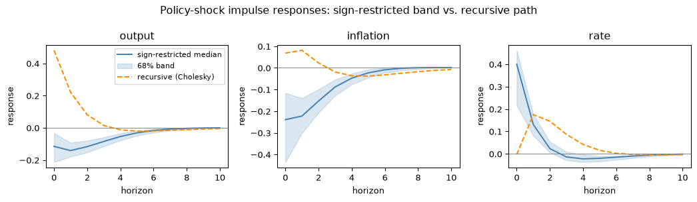

import numpy as np
from scipy import stats
import matplotlib.pyplot as plt
SEED, T, M, ITER, BURN, H = 2026, 160, 3, 2200, 600, 10
rng = np.random.default_rng(SEED)
A = np.array([[.5,.1,-.1],[0,.6,-.1],[.1,.1,.4]])
series = np.zeros((T+1,M))
for t in range(T):
series[t+1] = A @ series[t] + rng.normal(0,.5,M)
X, Y = np.column_stack([np.ones(T),series[:-1]]), series[1:]
K = X.shape[1]
b0 = np.zeros(K*M)
Vdiag = np.tile([10.,.3,.3,.3],M)
P0 = np.diag(1/Vdiag)
nu0, S0, Sigma = M+2, np.eye(M), np.eye(M)
accepted, covariance_draws = [], []
for s in range(ITER):
inv_sigma = np.linalg.inv(Sigma)
precision = P0 + np.kron(inv_sigma,X.T @ X)
covariance = np.linalg.inv(precision)
mean = covariance @ (P0 @ b0 + (X.T @ Y @ inv_sigma).ravel(order='F'))
b = mean + np.linalg.cholesky(covariance) @ rng.standard_normal(K*M)
B = b.reshape(K,M,order='F')
residual = Y-X @ B
Sigma = stats.invwishart.rvs(nu0+T, S0+residual.T @ residual, random_state=rng)
if s < BURN:
continue
covariance_draws.append(Sigma.copy())
rotation, triangular = np.linalg.qr(rng.standard_normal((M,M)))
rotation *= np.sign(np.diag(triangular))
impact = np.linalg.cholesky(Sigma) @ rotation
responses = np.array([np.linalg.matrix_power(B[1:].T,h) @ impact[:,0]
for h in range(H+1)])
for sign in [1.,-1.]:
candidate = sign*responses
if (candidate[:3,:2] < 0).all() and (candidate[:3,2] > 0).all():
accepted.append(candidate)
break
accepted = np.asarray(accepted)
assert len(accepted) > 0
band = np.quantile(accepted,[.16,.5,.84],axis=0)
print(f'Accepted rotations: {len(accepted)}/{ITER-BURN}')
recursive = np.array([np.linalg.matrix_power(B[1:].T,h) @ np.linalg.cholesky(Sigma)[:,0]
for h in range(H+1)])
fig, axes = plt.subplots(1,3,figsize=(11,3.2))
for j,name in enumerate(['output','inflation','rate']):
axes[j].plot(range(H+1),band[1,:,j],color='steelblue',label='sign-restricted median')
axes[j].fill_between(range(H+1),band[0,:,j],band[2,:,j],alpha=.2,color='steelblue',
label='68% band')
axes[j].plot(range(H+1),recursive[:,j],color='darkorange',ls='--',label='recursive (Cholesky)')
axes[j].axhline(0,color='grey',lw=.7)
axes[j].set(title=name,xlabel='horizon',ylabel='response')
axes[0].legend(fontsize=8)
fig.suptitle('Policy-shock impulse responses: sign-restricted band vs. recursive path')
plt.tight_layout()
plt.show()Accepted rotations: 98/1600